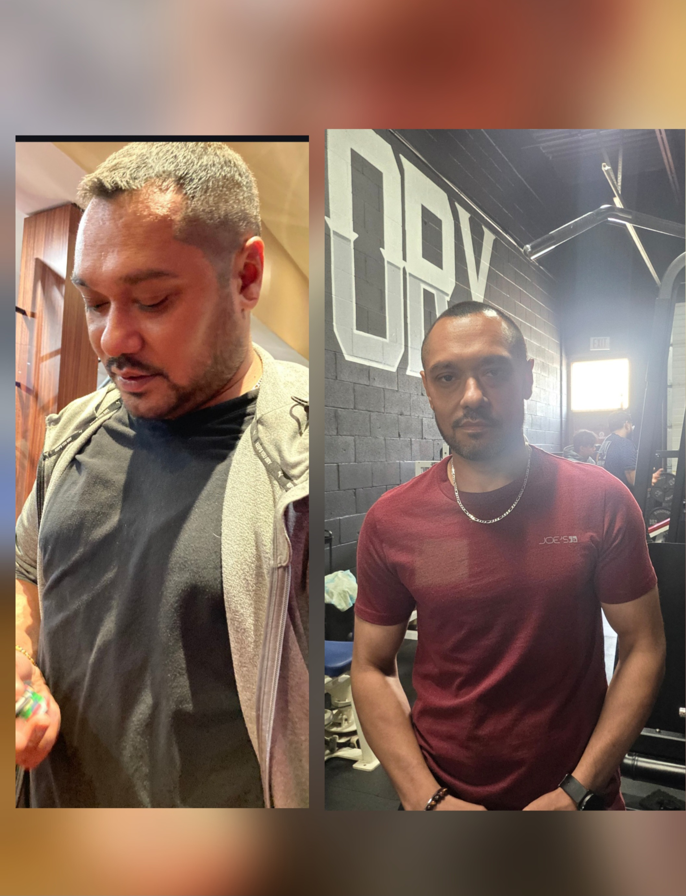
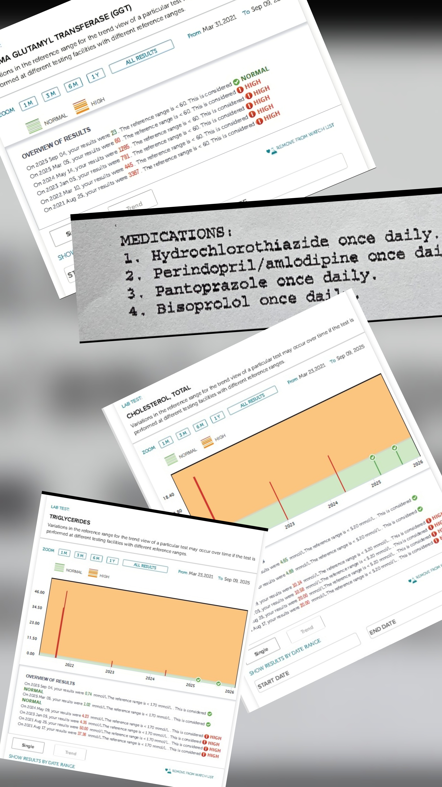

Where I was. Where I am.
For years I ran at full speed on the only script I knew. Work, goals, ambition, milestones, the relationships, the look of having it together. From the outside everything tracked. Inside, even with most of what the script said to chase, a quiet void had been there the whole time. The race wasn’t mine. I’d just never stopped long enough to ask.
The body was the first place that started showing what that script had cost. Side by side, the numbers tell the story.
January 2025
Spring 2026
Weight
221 lbsBMI 35 · clinically obese
150 lbsNormal weight
Liver
Stage 4 fibrosisLast stage before failure
Stage 0Completely reversed, healed
GGT
1,28521× the upper limit
23Deep normal
Cholesterol
10.14
4.65
Triglycerides
4.23
0.74
Blood Pressure
160 / 100
134 / 77
Medications
Five dailyFor accumulating metabolic damage
ZeroConfirmed by physician
If you don’t believe these numbers, I have the medical records to prove it. Connect directly with me.
The body did not change first. The mind did. The page below is what actually changed, and how.
A rebuild doesn't begin with a decision. It begins with a recognition. Sometimes it arrives the hard way... a situation serious enough that we finally say, I can't keep doing this. Sometimes it arrives quietly... the slow awareness that no matter what we achieve, something still feels off. Recognition comes first. The decision is the second step, for those who choose it.
The pressure underneath
Men who are used to pressure can keep moving long after something underneath has stopped working. From the outside it looks like discipline. From the inside it feels like discipline. It isn’t. It’s not paying attention to what the discipline is costing.
I didn’t quit. I didn’t check out. I didn’t put it on anyone else. I kept the work moving, kept the obligations, showed up at the level the situation needed and sometimes beyond. Years of training to carry pressure had done their job. The body and the mind absorbed the load and kept going.
What I hadn’t learned yet: some pressure can’t be outworked. The next milestone doesn’t fix it. The willpower that handled every smaller version stops working when the version gets big enough. For a decade my strategy was: keep going. It wasn’t working anymore.
What the body was saying

The numbers weren’t a surprise. The body had been keeping track the whole time, sending warnings I’d been overriding. Doctors had been telling me too, and I’d stopped listening to most of them. That isn’t weakness. It’s what happens when a man has been pushing through warning signals for so long that he stops hearing them.
We cannot fix a problem we cannot see, and we cannot see what we are inside of.
The Choice Point
A point came where I had to choose. Keep forcing forward and pretend the old approach still worked, or step back, regroup, and rebuild from the ground up.
Two paths. One was the way that had brought me this far. The other was uncharted ground...an admission that the runway had run out.
I made the call.
I called a hard reset. The reset was not surrender but the move you make when the current line has stopped working, so you can consolidate, repair, and come back from a stronger position. In any real military tradition, retreat in that sense is not failure. Sun Tzu wrote about it, and so did Marcus in the field, in his notebook to himself.
The impediment to action advances action. What stands in the way becomes the way. Marcus Aurelius · Meditations · c. AD 170
That sentence is not a Hallmark card but a working principle.
I stepped back from the noise. The pace, the pressure, the opinions, the constant input. I gave myself the silence the rebuild needed.
In that silence, what had been running me became visible. The habits I’d stopped questioning. The reactions firing automatically. The crowd I’d been following without asking where it was going. The script I’d been running without checking who wrote it. The work wasn’t easy. For the first time it had a direction.
What was actually mine
Underneath, a second realization.
For years I had been investing too much in things outside of me. Career, status, income, the visible markers I had chased and, for a time, chased well. When they started to shift, I learned something I should have known all along. We can lose those things as fast as we build them. They were never as solid as they looked, and they were on loan the whole time.
So I asked the question. If the externals can vanish, what actually belongs to me?
The answer was short. Just two things: my mind and my body. These two had been mine the entire time. Everything outside me could be taken, but these could not. Whatever my age, whatever my condition, I am the one who decides what to do with them.
That is where I rebuilt from.
Mind first
The path forward wasn’t managing the situation, accommodating it, or making peace with what had happened and carrying on. The path was a rebuild from the foundation. Mind first. The rest follows.
We cannot become a new self while still anchored to the old one. The work begins with subtraction.
The subtraction is real. We have to remove the noise around us: the opinions, the advice, the constant input from every direction. More importantly, we have to be willing to drop the beliefs and assumptions we have been running on for years: the frameworks we did not choose, the stories about ourselves that are not really ours, the things we “know.” If something in our life feels off, the beliefs we have been running on are not going to be the ones that get us out of it. If they were, nothing would feel off in the first place.
You cannot solve a problem with the same thinking that created it. Principle
The mental rebuild was deep. I read everything I could find on how the mind works: the neuroscience, the cognitive frameworks, the contemplative traditions that had been pointing at the same thing for two thousand years. I sat in silence regularly, in the unromantic sense of just sitting still. I watched my thinking the way we watch weather. Not identifying with it. Just watching it pass. I learned to catch a pattern the moment it started firing, so I could choose differently before it completed. The voice running my life turned out not to be me. It was a script I’d inherited and never examined. Once I could see it, I could change it.
The mental work was the work, and changing the mind was the only thing actually required.
This is not original. The Stoics named all of it two millennia ago. The contemplative traditions named it long before that. Most of us dismiss this kind of writing as soft, read it, claim to apply it, post it on social media, and never do the work. What is new each time is the man who reads it and lives it.
Emotion out
One more move made daily execution possible. I took emotion out of the equation.
Not numbness. The deliberate decision to stop letting how I felt about anything drive what I did about it. The Stoics had a name for it, though they didn’t call it robot mode. They called it operating with reason in command and emotion as information. The Bhagavad Gita points at the same thing in different words: action without attachment to the fruits of action.
In practice it was simple. I made the calls, kept the appointments, did the workouts, ate what I’d decided to eat, whether I felt like it or not. Most days I didn’t. That stopped being relevant. The body and the mind don’t need our cooperation to do what we’ve already decided.
I operated like a tool, executing on what the situation required. I was not suppressing anything. The part of me that wanted to negotiate with the work had been outvoted by the part that knew what had to happen.
Acting as him
Here is the move most people do not make.
We can do all the inside work: the reading, the sitting still, watching ourselves think. But there is a moment in the rebuild where the work stops being preparation and starts being identity. That moment does not happen because we feel ready. It happens because we decide.
I made the decision. The fit, healthy, sharp version of me would be the version I acted from, starting now. I acted as him before I felt like him, before I looked like him, before any of the proof had shown up.
That’s the move most men miss. They’re waiting until they feel like the version of themselves they want to become. That version doesn’t exist yet. It won’t exist until they start acting as if it does. The man is built by the acting. He doesn’t show up first.
I stopped checking the scale. I stopped going around the hard parts and started walking through them. I gave myself a system, complied with it, and let the proof show up on its own time.
The version that came back
The version of me that came out of that rebuild lives differently than the one that called the reset.
I lost seventy pounds in under a year. I came off the medications, one by one, my doctors confirmed it. The blood markers normalized. None of it came from one decision. It came from a thousand small ones, taken every day, in the cold of morning and the weight of evening, when I felt like it and when I didn’t. I built a baseline I hadn’t had in twenty years. Probably never had quite like this.
None of that came from becoming a fitness obsessive. I am not a man who counts calories, lives in the gym, or runs his life around a strict diet. That was never the point.
What moved things was quieter. I cleared the noise. I subtracted the stressors I was carrying that did not need to be there. I made decisions that lined up with where I was trying to go, and acted on them deliberately, not frantically. No chasing the next thing, no competing with anyone, no measuring myself against people running a different race. Just steady, paced, daily action, and a mind kept under control instead of left to wander wherever it wanted. The body followed the mind. It usually does.
Who you become is built in the days, one at a time. Stay focused. Quiet the noise. Move with intention. Principle
The pressure is still there. That will not change, and the Stoics would be the first to call it out if I claimed otherwise. What is different now is how it gets met. I can recognize the pattern when it starts. I can let it pass without acting on it. I can act from clarity instead of from urgency. The difference between those two modes, once we have lived in both, is not subtle. It is the difference between a man who is being lived by his life and a man who is living it.
The work is sharper now, the judgment is steadier, and the grip on outcomes has loosened. I take daily action that lines up with where I am going. I do the work for the work, and I let the results land where they land. In real estate, where stakes are high and emotions tend to run the room, that is not a small thing. The way I show up now is built for the long game, with the patience for results that build over time rather than results that arrive on Monday. It stays steady on what I can control, and stays ready for the next round of pressure when it comes.
Outside of the practice, I keep returning to the mind: how it works, how it produces what it produces, how it runs a life until we notice it running, how everything else (the body, the work, the relationships, the trajectory) flows downstream of it. That study is now a daily practice.
I train, I run, I learn. I question things and take nothing on face value. I read old books, and I sit still. The training is part of how I live now, maintenance more than mission, and it was never the thing that got me here. The mind set the direction first, and the right choices followed from that, this one among them. I have two dogs of my own, and I volunteer with shelters. They have shown me what loyalty, compassion, and being real look like.
Why I am writing this down
The reason I am writing this down is not to tell anyone what to do.
There is no shortage of people on the internet ready to tell us how they turned their life around and how we could do the same if we would just buy what they are selling. I am not selling anything here.
I am writing this down because there are men who look fine from the outside and know privately that something is off. They are still performing, still providing, still showing up. They are also tired, reactive, and running on pressure while calling it discipline. From the outside, the trajectory still looks plausible. Inside, the man knows.
I understand that man because I was him.
The man I was, deep in that stretch, couldn’t have read this from a stranger and believed it. He’d heard a hundred versions of the same advice. They’d all bounced off. What he would have needed to read, if anyone could have written it for him, was this. The people who get to the other side of a stretch like that aren’t the ones who finally found the right technique. They’re the ones who, tested past what felt manageable, made the call to reset, restart, rebuild, and re-engage from a stronger position.
If your life feels like chaos right now, if you have been pushing too hard for too long and nothing seems to be aligning, if you have started quietly accepting where you are because the alternative feels too far away to imagine, hear this: I have been there, and I know that stretch from the inside.
Here is what I learned that no one had told me. The setbacks turned out to be the path itself. The chaos was the test. The question it asks is whether we will push through it despite everything around us saying we should stop.
If we sincerely do, we will see through it, not by gritting our teeth but by doing the actual work this story describes. Mind first. The subtraction. The decision to act as the version we are trying to become, before the proof has shown up. One day at a time, until the days add up.
That is the promise. And the only thing I am here to say.
The obstacles were the curriculum, not the interruption to it.
There's no way around it. The only way is through it.
What it took was the decision made once and held every day after.
One day at a time. Daily practice
Taran